Valley: a starter's guide
How to found your first camp, grow it, and hand it to its own council.
What Valley is
You are a king with no land, standing on the Three Hills where Plovdiv will one day be. It is the Neolithic, the time before metal. There are berries on the bushes, a river across the plain, oak woods and pine on the heights, reeds by the water, and stone lying about. Nobody knows how to make anything beyond what their hands can gather.
Valley has no technology tree to climb. Nothing is unlocked because a timer ran out or because you paid for it. Instead the game follows one rule:
Needs lead to ideas. Ideas lead to solutions, in the form of objects and techniques.
When your people are cold, short of timber, tired of carrying loads, or fed well enough to want finer things, those needs push their spare time towards an answer. If stone lies everywhere and wood is scarce, they will work out how to pile dry-stone walls. If they carry heavy loads a long way, they will work out carrying straps, then yokes, then sleds or carts. Two peoples facing the same problem on different ground will solve it differently, and that is where their culture comes from.
So the culture you end up with is a consequence of the land and what its people needed, not a set you pick from a menu. Their houses, tools, weapons, dress and beliefs are all built up from what was around them and what they had to solve. At any time the Card shows who they have become.
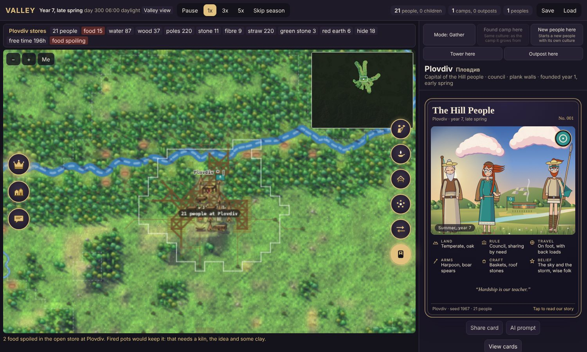
Finding your way around the screen
The map fills the middle of the screen. Everything else opens and closes from round gold icons on its edges, so you can show as much or as little as you like.
| Where | What is there |
|---|---|
| Top bar | The date and time of day, game speed (Pause, 1x, 3x, 5x, Skip season), counts for the whole realm, and Continue, Save and Load. The ? button opens this guide. |
| Stores band | Above the map: what the selected camp holds, such as food, water, wood and fibre. Red means short. |
| Map | Drag to pan, scroll or pinch to zoom. Zooming only changes the view. The solid line is a camp's granted land and the dashed line is how far it reaches. −, + and Me sit in the top-left corner. |
| Left icons | Crown: King settings and the realm overview. Houses: the Settlements list, with View cards. Speech bubble: Messages, the record of what has happened. |
| Right icons | Person with an axe: Work. Oil lamp: Ideas. Roof frame: Build. Council round a fire: Settings. Two arrows: Supply. Portrait card: Card. |
| Commands | At the top of the right panel: Mode (Gather or Explore), Settle here or Found camp here, New people here, Tower here, Outpost here. |
Click an icon to open its panel, and click it again to close it. The open icon glows gold. With both sides closed the map fills the screen.
Speed: 1x is calm, and 5x is for when things are running themselves. Skip season fades the screen, runs to the next season or the next big event, and fades back in. The evening and night pass in a few seconds, because people sleep.
Founding your first camp, step by step
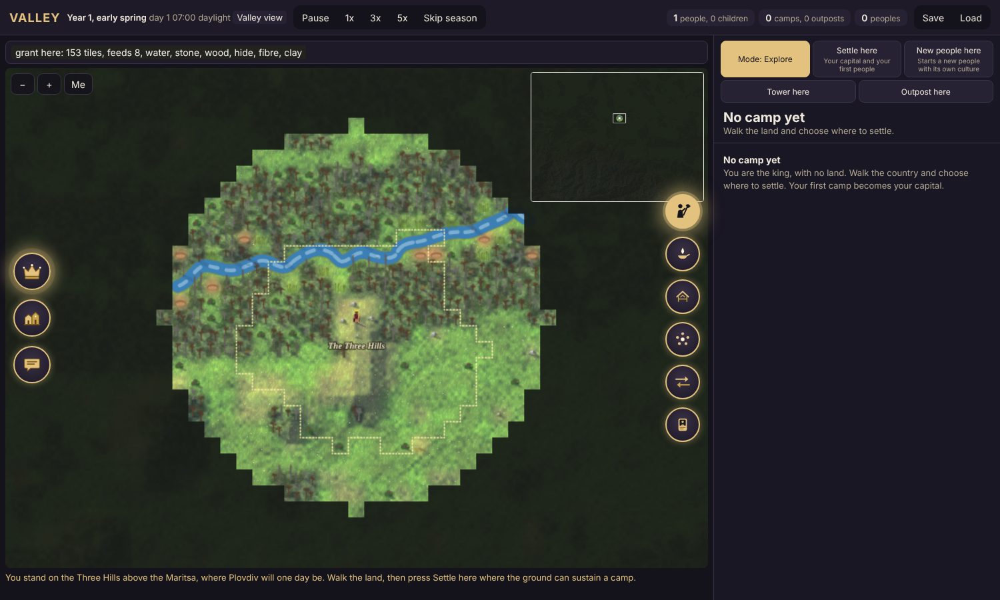
- Walk the land. You start in Explore mode, so taps on the map only walk you there. A dotted outline follows you. It shows the land a camp founded where you stand would be granted. The stores band tells you what that land holds: how many people it would feed, whether there is water, and what else lies inside it.
- Choose your ground. A camp needs land that will feed 8 people, with water and wood. Reeds nearby give the fibre for huts. Stone, clay and mud nearby will matter later, because they decide what your people can build. Where you settle is the first choice that shapes their culture: a riverside people becomes a different people from a hill people.
- Press Settle here. This becomes your capital, and its people are your first people. The solid line around it is its grant, which is fixed. The dashed line is its reach, which grows as the camp works further out.
- Gather. You are now in Gather mode. Tap berries, the stream and trees to work them. The king walks over and works with the king's tool, then carries the load home. Loaded, people walk half as fast, so the distance from a resource to home matters.
- Light the fire (5 wood). Open Build (the roof frame icon) and build the Fire. Nobody will stay with you until there is a fire.
- Build huts (10 wood and 4 fibre each, sleeping 3). Wanderers only stay where there is room.
- Wanderers arrive. At dawn, if there is room and enough food in store, a wanderer may join you. The Next wanderer line under Work tells you what is holding the next one back: no room, too little food, or not yet dawn.
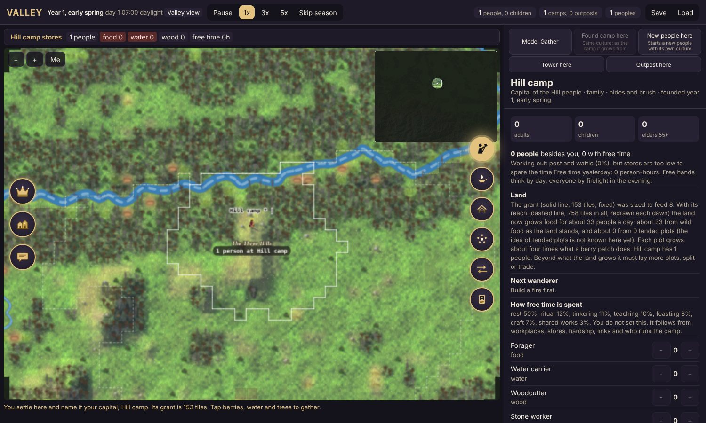
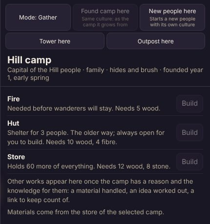
Keep gathering and building until you have 6 people.
Growing the camp
Give people jobs
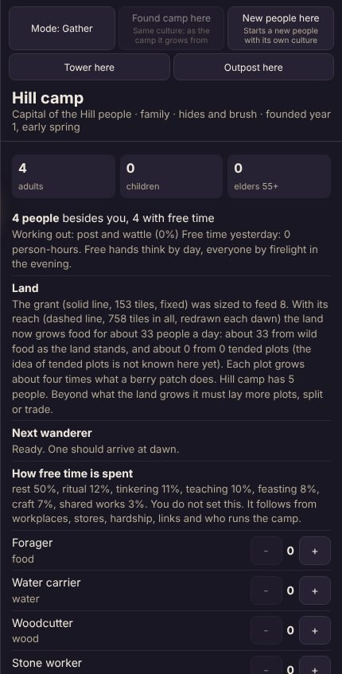
Open Work (the person with an axe). It shows how many adults, children and elders you have, then one row per job, each with − and +: forager, water carrier, woodcutter, reed gatherer, stone worker and so on.
A good start is one or two foragers, one water carrier and a woodcutter, with the rest free. Watch the stores band. Red food or water means move someone onto it.
Free time is where ideas come from
Ideas aren't bought. They are worked out in free time:
- By day, people with no job tinker.
- In the evening, everyone round the fire thinks, but only if there is light to work by.
- An idea needs three things: a reason, the means to try it, and free time. The reason is a need felt now, a reward for the maker, or curiosity fed by surplus.
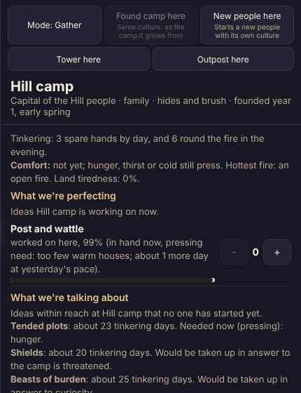
Steer it with thinkers
You can't choose an idea out of nowhere, but you can push one along. Next to any idea already being perfected there is a +. Each + sets one spare person to think about that idea all day. This is how you shape the settlement: back the answers you want. The council keeps your thinkers in place until the idea is known.
Needs lead to solutions
| The need | The idea | The solution |
|---|---|---|
| Huts leak warmth in frost | Wattle and daub, or laying dry stone | Solid houses that hold 4 and stay warm |
| Little timber, stone everywhere | Laying dry stone | Thick, low fieldstone walls that don't burn |
| Heavy loads carried far | Carrying straps, then yokes | People haul more each trip |
| A river in the way | Rafts, later plank boats | The far bank and what lies on it |
| Food spoiling in store | Pots, and a kiln to fire them | Fired pots keep food |
A different camp, on different ground, would meet the same need another way. That is the point.
Watch for the frost
When the frost comes, berries and plots all but stop growing, huts leak warmth and the fire burns more wood. Messages will warn you a few days ahead. Store wood and food before winter, and get solid houses up as soon as your people know how to build them.
Handing the camp to a council
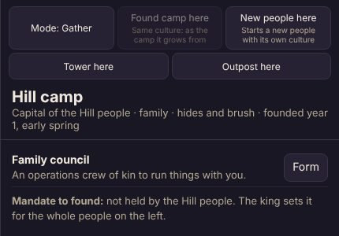
At 6 people there is too much for one king to direct alone. Open Settings and form the Family council.
What changes when the council takes over:
- The camp gets its real name. It takes the name of the real village whose land it holds, from the official Bulgarian register, with the Bulgarian spelling beside it (for example Plovdiv, Пловдив). Camps founded later inside a named town's land keep plain names.
- The people get their name, and their culture card begins.
- The council hands out the jobs. Under Work, Council runs the jobs turns on. People move to whatever the camp is short of, and spare hands get free time.
- The council builds. It puts up anything new to the best way it knows: a solid house before a hut, and tiles once it can fire them. It leaves what already stands alone.
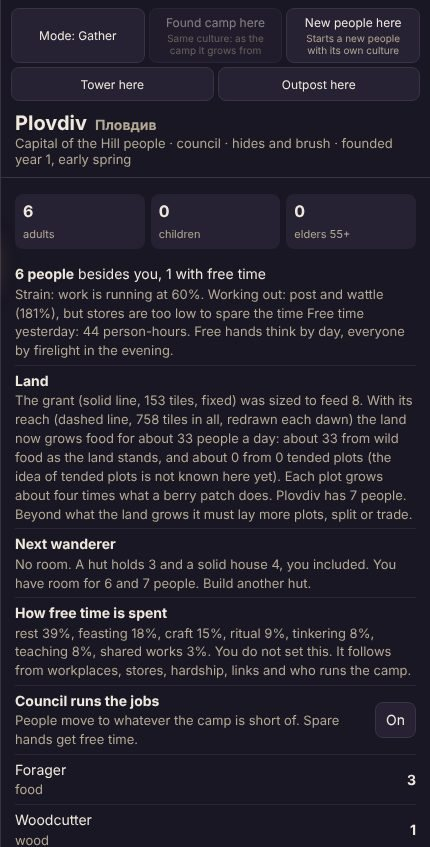
What the king keeps:
| You can still | Where |
|---|---|
| Set thinkers on any idea in hand | Ideas, the + beside the idea |
| Build anything yourself | Build, including the older kinds |
| Take the jobs back | Work, switch off Council runs the jobs |
| Set this camp's rules | Settings: who decides (council or chief), how the store is shared, the levy, who may learn, whether knowledge is shared |
| Set rules for many camps | The crown, King settings: the same rules for a whole people or the whole realm, kept as your defaults |
| Order free exchange | Supply for one link, or the crown for a whole people or realm |
| Grant the mandate to found | The crown: give or withdraw a people's right to found new camps on their own |
| Go anywhere | The map, with Mode set to Explore or Gather |
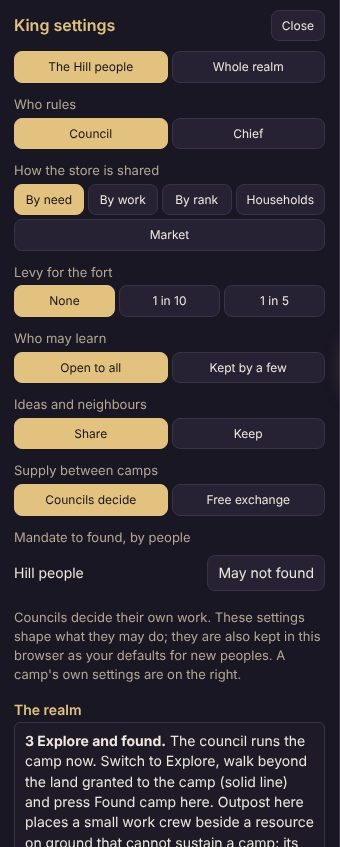
The council doesn't take your choices away. It carries them out day to day, so you can step back and look at the bigger picture.
After the handover
Spread out. Switch Mode to Explore, walk beyond the solid line and press Found camp here. The new camp keeps the same culture: it joins your people and grows from the camp nearest it. Outpost here puts a small work crew beside a resource on ground that can't feed a camp. Its parent camp carries food and water out to it.
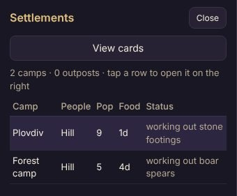
Start a different people. New people here begins a new people with its own culture. You nurture it by hand, just as you did the first, until it has its own council. Then compare how the two turn out.
Link camps. Open Supply (the two arrows) to see every other camp. Each council decides what it sends and takes along each link: a camp short of food stops sending, a chief under strain hoards, and a camp that shares by rank only gives to its kin. You can leave it to the council or order Free exchange both ways, for one link or, under the crown, for a whole people or the whole realm. A camp that gives and gets nothing back loses trust, and camps that trade both ways grow closer. Links also carry ideas from camp to camp.
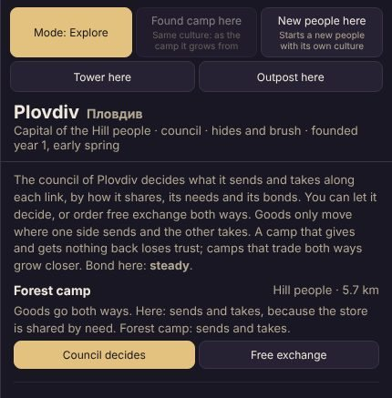
Watch the land and its dangers. Fires, earthquakes and floods happen, and they change how people choose to build. A camp burned out may turn to stone, and one shaken by an earthquake may turn back to timber. Towers and forts, under the crown, are for watching the borders once you turn raiders on.
Look at who they have become. Open Card (the portrait card) for the selected camp's people. It shows their land, rule, travel, arms, craft and belief, with a picture drawn from what they actually use. Tap the card to read their story in their own words. AI prompt writes a detailed description you can paste into an image generator. View cards, in Settlements or under the card, turns through every people in this game.
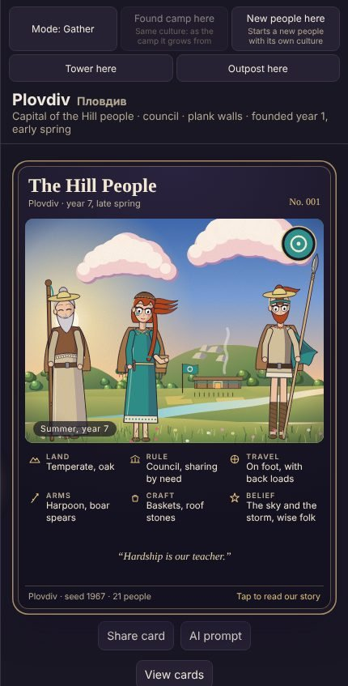
Save and continue. The game saves itself in your browser every few minutes and at each change of season. Next time you open it, press Continue in the top bar. Save also downloads the game as a file you can Load anywhere.